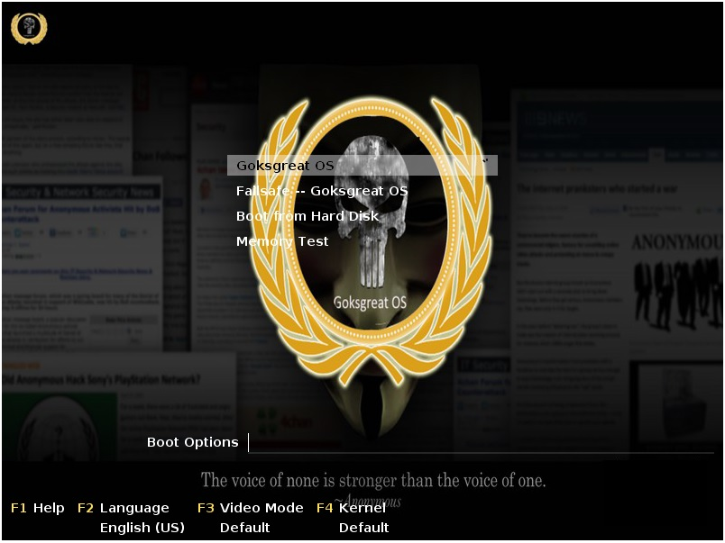

Goksgreat OS
NEXT
PREV
Features of Goksgreat OS are...
Linux
+
Base kernel OpenSuse
Familiar GUI
+
Windows like GUI
Hack OS
+
Best hacking tools
KDE 4
+
Desktop
Wine CVS
+
Run Windows Apps
32-bit x86
+
64-bit
Live Version
+
Connect and Hack
Graphics
+
mynvidia
NEXT
PREV
Configuration of Goksgreat OS is...
1024 Mb
Memory
8 Gb
Disk Space
Cloud
Integrated
LVM
Support
NEXT
PREV

NEXT
PREV
Download Goksgreat OS
Right Now Goksgreat OS is in Beta Version and we are testing it for one year. Help and support our team by downloading its beta version.
Right now it can be downloaded through torrent.
Download it
We will not be responsible to any damage to your hardware or software component.
NEXT
PREV
Installing Goksgreat OS
1. Download the .iso file from the link.
2. Burn the .iso on a DVD.
3. Alternatively make bootable USB of the iso using various tools. (Google It)
4. Boot from it.
5. Your plug and hack device is ready.
Download it
NEXT
PREV
Thanks
Documentation for the various hacks would be soon made online.
It's main purpose is to test the vulnerablility of a system.
To get the first copy of Documentation and other related queries mail us at :
goksgreat@gmail.com